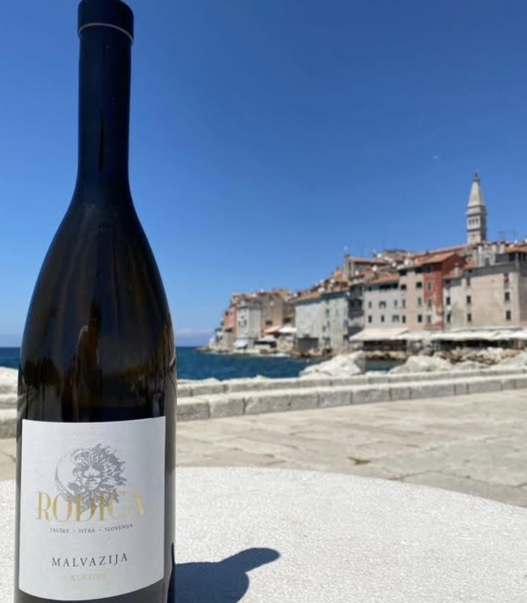
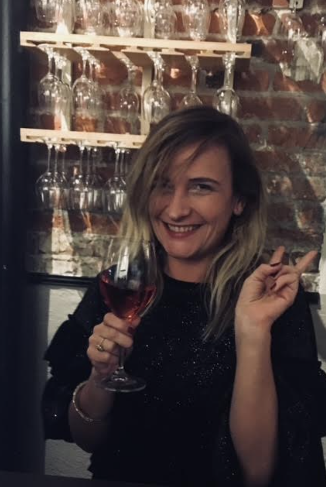
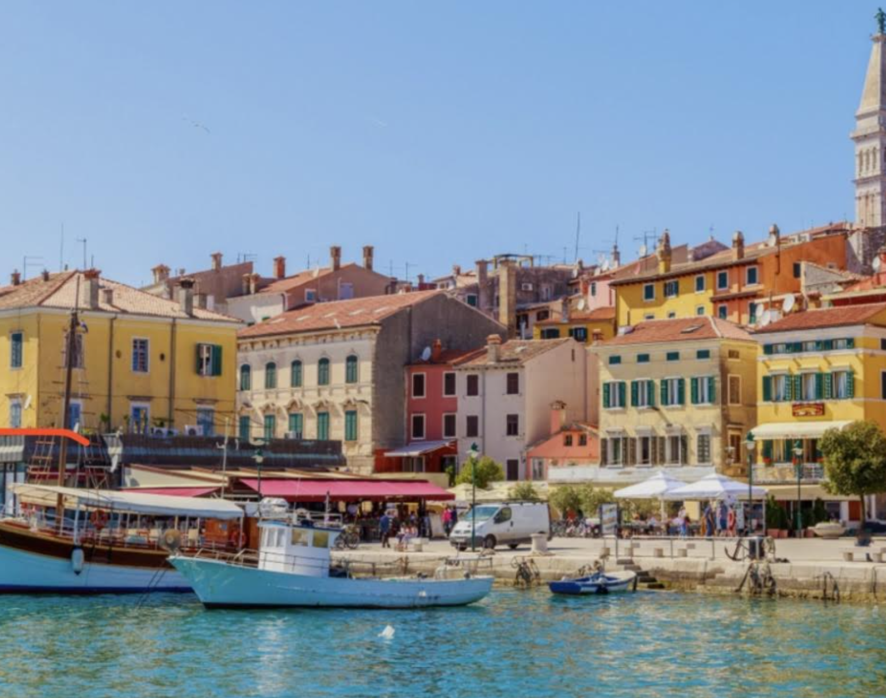
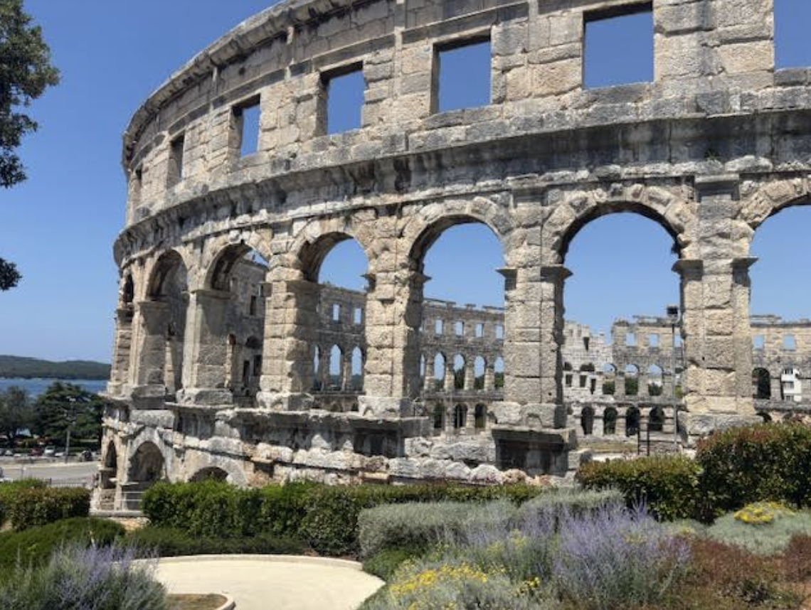
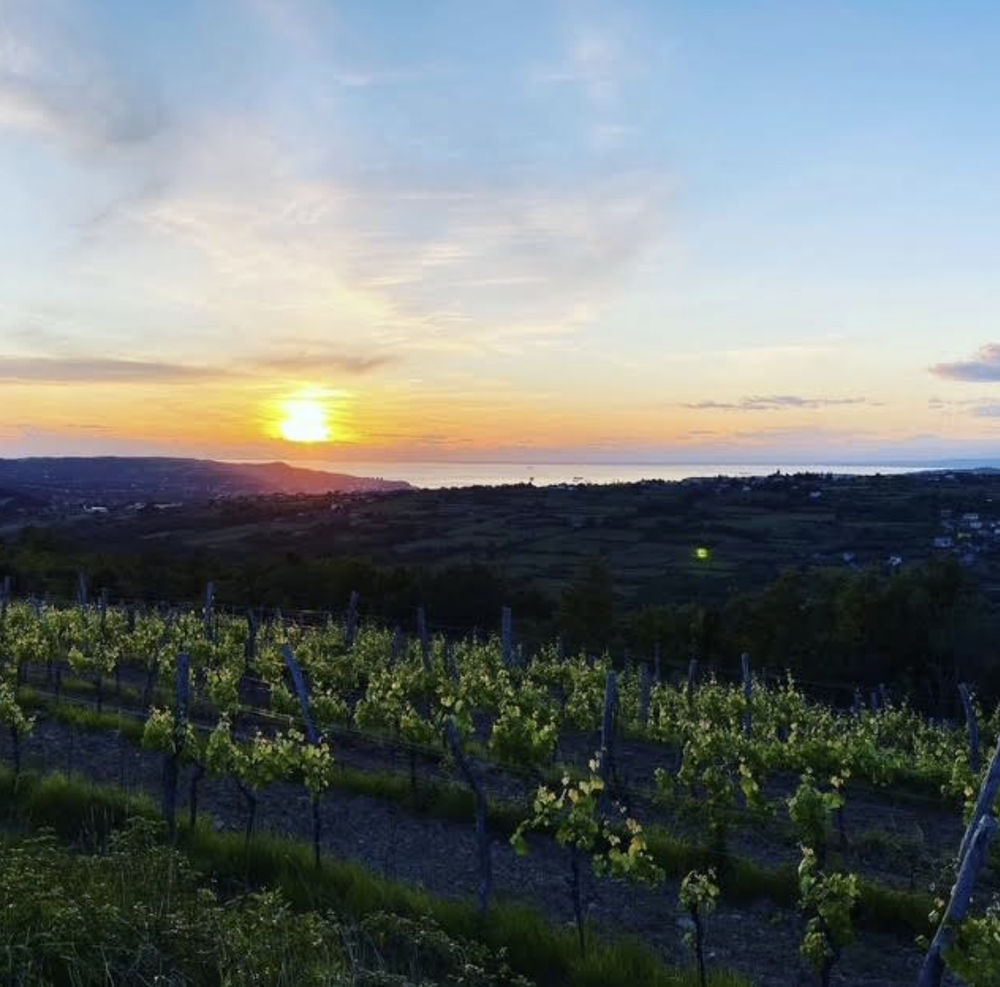

Amsterdam Travel

The Mosel Valley is a region that truly captivates you, built on slate, sweat, and Riesling, with its impossibly steep vineyards rising dramatically from the banks of the winding river.
She owns a small wine travel company “Koreni” (“roots” in her native language). Fostering connections via the universal language of food and wine is a great passion of hers. Having been born and raised on the Balkan Peninsula, she traveled extensively throughout the region and possesses first-hand insights that will help authentically convey stories of this beautiful part of the world.

She holds WSET 3, French Wine Scholar with the Wine Scholar Guild and Lustau Sherry specialist certificates. Her background also includes a Sustainable High-End Tourism Specialist certificate from the Universitat Autònoma de Barcelona, with a focus on environmentally responsible, high-quality travel experiences.
In her search for meaning and ways to preserve our shared humanity, Milja is turning to nature, to self and others. She often finds answers at (preferably long) tables sharing food and wine with kind, curious folks from all walks of life.

Jerry’s dynamic coaching style is a result of her passion/expertise in motivation, neuroscience, learning, and personal presence. Her clients describe her as an astute listener, engaged growth-partner, and completely authentic. She has an uncanny ability to ask questions that provoke new ways of thinking. Her mastery of a myriad of coaching and consulting frameworks have sparked positive change in over 150 leaders, to date.

After a dozen years in the real estate brokerage and development field, Jerry did a 180-degree turn, selling her businesses and opening a yoga studio. While the physical and spiritual aspects of yoga resonated deeply and still do, she missed the energy around helping people get what they want in the business and professional development world. Coaching was a natural pivot and meshes perfectly with her lifestyle. Having learned for herself what it takes to achieve unapologetic fulfillment, she relishes in helping others do the same.


Published: Apr 15